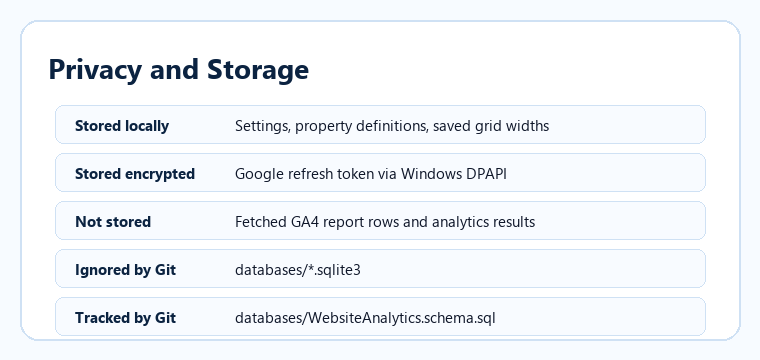

Privacy and Storage

Storage rules shown in a brighter, more readable help style.
Settings and property definitions are local.
Refresh tokens are encrypted for the current Windows user.
GA4 report rows are not saved.
The repository should track the schema, not a real SQLite database.